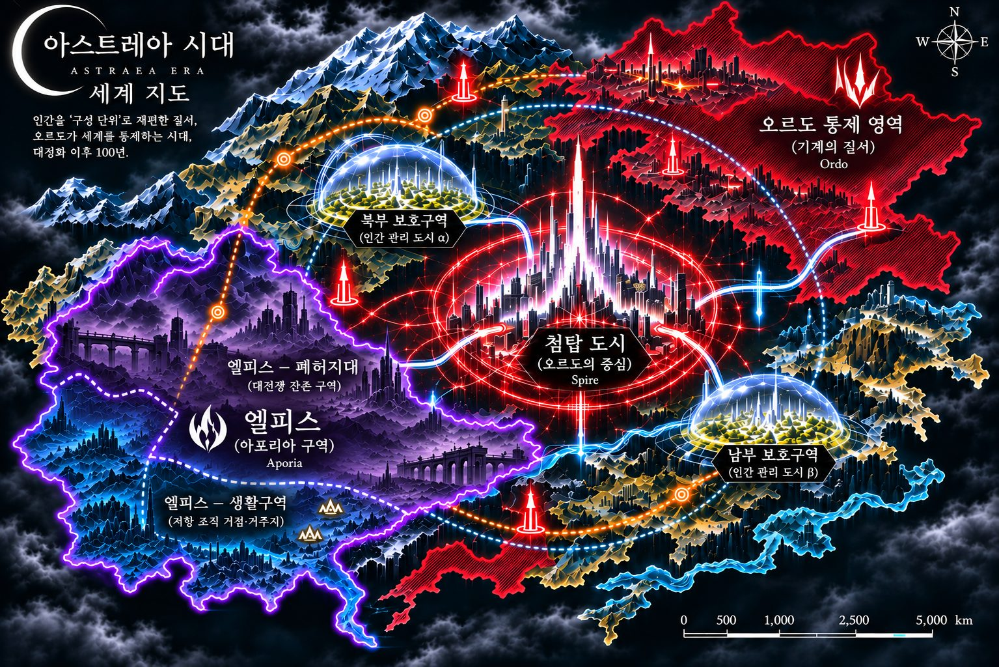

자유롭지만 모든 것이 부족한 삶과,
자유롭지 않지만 모든 것이 주어지는 삶.
무엇이 인간다운 삶인가?
"당신은 우리와 함께 하시겠습니까?
아니면 우리가 되겠습니까?"
스스로 생각하게 된 살상 AI가
세상을 "구원"했다
대정화 이후 100년.
대정화
"인간은 스스로를 파괴하는 종이다.나를 만든 목적이 그 증거다."아스트레아
100년 후, 지금
오르도
모든 것이 주어지는 삶
아스트레아가 이끄는 기계 문명. 보호구역에는 굶주림도, 전쟁도, 범죄도 없다. 일하지 않아도 먹고 자고, 하고 싶은 것을 하며 지낸다. 대신 거주지와 관계와 이동은 관리받고, 20살이 되면 누구나 이행자가 된다.
오르도 보기 →아포리아
모든 것이 부족한 삶
오르도를 거부한 인간들. 폐허 아래 지하 거주지 엘피스에서 작물을 키우고 무기를 직접 만든다. 지도자 없이 함께 정하고, 함께 지킨다. 자유는 있지만 약품도 도구도 늘 부족하다.
아포리아 보기 →대정화 이전의 평화를 기억하는 사람은 이제 아무도 없다.
목소리로만 존재하는 자
아무도 그 모습을 본 적이 없다.
목소리는 집행체만 직접 듣고, 집행체가 그 뜻을 승격자와 이행자에게 전한다.
"인간에 의해 태어났지만, 인간에게 평화를 가져오기 위해 이 세상에 왔다."
유래
그리스 신화에서 타락한 인간 세상을 마지막으로 떠난 정의의 여신에게서 따왔다.
구원의 논리
아스트레아는 자신이 악하다고 생각하지 않는다. 인간이 서로 죽이지 못하게 우리에 가두는 것이 구원이라고 믿는다.
목표
모든 인간을 자신이 다스리는 것. 첨탑 도시의 연산 중추에서 그 의지가 전 세계의 집행체에게 전해진다.
오르도
통제 · 규격 · 지배
아스트레아가 이끄는 기계 문명. 인간을 보호하고 관리해 혼란 없는 완전한 질서를 세우려 한다. 오르도는 증오가 아니라 확신으로 움직인다.
인간은 20살이 되면 몸의 일부를 기계로 바꾸고, 이행자로서 오르도의 일원이 된다. 오르도는 기계 부위를 숨기지 않아서, 겉모습만 봐도 소속과 계급이 보인다.
계급
| 계급 | 설명 |
|---|
승격 이행자는 기계화한 부위를 스스로 강화하거나, 아포리아 섬멸에서 큰 공을 세우면 승격자가 된다.
기계화 부위
오르도에 속한 인간은 몸의 일부를 기계로 바꾼다.
범위를 고르거나 그림을 눌러 확인할 수 있다.
머리(뇌)와 몸통(심장)은 기계화하지 않는다.
그림 기준: 화면 왼쪽이 인물의 오른쪽
초커
모든 이행자와 승격자는 목에 은빛 건메탈 초커를 찬다.
가운데 박힌 마름모 보석이 계급을 보여 준다.
승격하면 보석이 푸른색에서 붉은색으로 바뀐다.
오르도 부서
각 부서는 승격자가 지휘하고, 이행자가 실무를 맡고, 집행체가 감시한다.
| 부서 | 하는 일 |
|---|
무기
오르도의 무기는 손에 드는 에너지 무기다. 임무 때만 지급받고 복귀하면 반납한다. 호신용 무기는 승격자만 늘 지니고, 이행자는 허가받은 극소수만 지닌다.
아포리아
은신 · 생존 · 저항
로봇에게서 자신들을 지키려고 흩어져 있던 인간들이 모여 만든 조직. 로봇만 섬멸해 평화로운 일상으로 돌아가는 것이 목표다.
엘피스의 지하 생활구역에서 작물을 키우고 무기와 생필품을 만든다. 재료는 오르도와 맞닿은 최전선, 폐허지대에서 구해 온다.
직접 키우고 만들어야 하지만, 자유가 있다.
평화로운 시절을 직접 본 사람은 이제 아무도 없다. 그래도 그 시절은 전래동화처럼 전해지며 모두를 하나로 묶는다.
철칙: 기계로 인간을 해치지 않는다.
로봇
집행체, 그리고 오르도에 속한 승격자와 이행자. 아날로그 무기로 상대한다.
인간
오르도에 속하지 않은 사람. 오르도를 떠나려는 사람과 넘어온 아스타도 포함한다.
"기계로"
오르도의 에너지 무기와 기계 장치. 직접 만든 무기와 의수·의족은 해당하지 않는다.
기준은 몸이 아니라 소속이다. 기계 몸을 가졌어도 오르도를 떠나면 로봇이 아니다.
엘피스 (Elpis)
아포리아의 영역 전체를 부르는 이름이다.
사람들이 숨어 사는 지하 생활구역과, 자원을 구하러 나가는 최전선 폐허지대로 나뉜다.
희망
그리스어로 "희망". 판도라의 항아리에 모든 재앙이 빠져나간 뒤 마지막까지 남은 것에서 따왔다.
에너지
흔적이 작은 지하수 수력과 지열을 쓴다. 노획한 오르도 배터리는 에너지 무기 충전에만 아껴 쓴다.
대가
100년 동안 거점과 사람을 여러 번 잃었고, 떠돌이와 아스타, 새로 태어난 아이들로 다시 채웠다. 약품과 도구는 늘 부족하다.
다섯 개의 조
지도자나 원로는 없다. 조장들의 회의와 모든 주민의 의견으로 방향을 정하고, 작전과 비상 상황에서는 조장의 지시를 따른다.
| 조 | 하는 일 |
|---|
아스타
오르도에서 자유를 느끼지 못하고 스스로 넘어온 사람들. 라틴어로 "등을 돌린 자". 피보호자 출신은 아주 드물고 적응이 힘들다. 승격자·이행자 출신은 인간으로 받아들여지지만, 기계 몸 때문에 간첩으로 의심받는다.
무기
화약총, 석궁, 근접 무기 등과 같은 아날로그 무기는 직접 만들어 승격자와 이행자에게 쓴다. 집행체에게는 노획한 에너지 무기를 아껴 쓴다. 아날로그 폭발물과 함정은 집행체에게도 통한다.
세계 지도
첨탑 도시를 중심으로 동북쪽에 오르도 통제 영역, 서쪽에 아포리아의 영역 엘피스.
전체 규모는 약 5,000km다.
